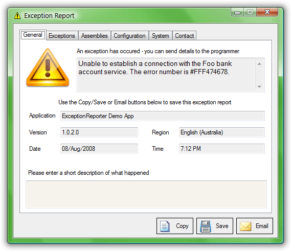

Exception Reporter is a .NET WinForms component that provides a solution to receiving technical information about exceptions in an application.
Exception Reporter shows a dialog that contains technical details of an exception (including inner exceptions) and gathers details about the system that might help the developer to pin-point the issue. Exception Reporter provides the facility to email/save/copy an Exception Report. Much of the interface is configurable - allowing for custom label messages and showing/hiding tabs based on your application requirements.
The Exception Reporter component is free software; you can redistribute it and/or modify it under the terms of the GNU General Public License.
The Exception Reporter Project is hosted at www.codeplex.com/ExceptionReporter and is currently being maintained by Peter van der Woude (spurrymoses@gmail.com) after being hosted at SourceForge by the original author, Phillip Pettit - who first wrote it as commercial software in 2004, under the company name "StrataLogic". It was then known as SLSExceptionReporter.
